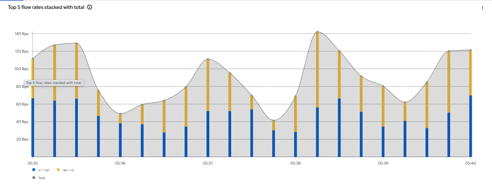
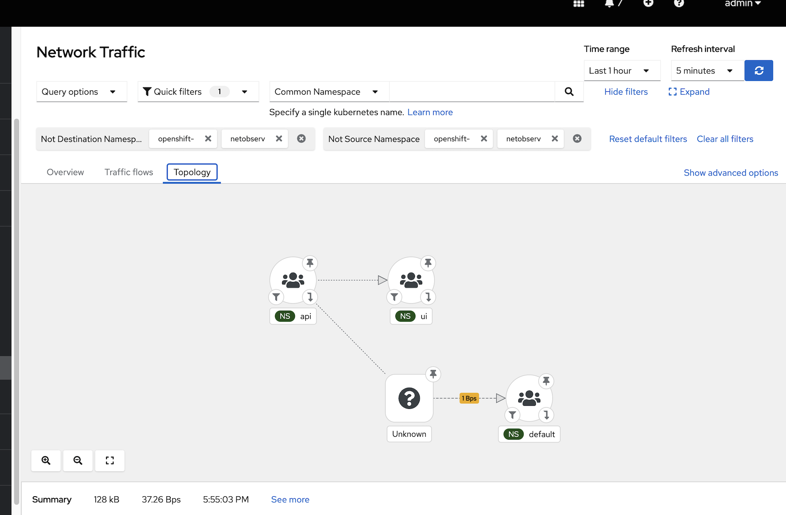
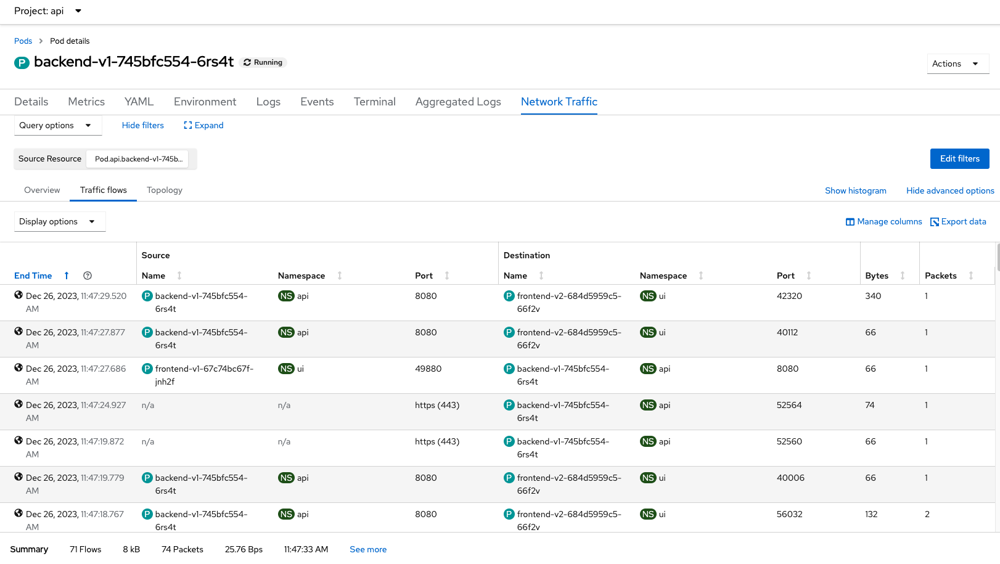

Network Observability
Install Operators
Network Observability Operator
Install Network Observability Operator
-
oc create -f manifests/netobserv-operator.yaml sleep 60 oc wait --for condition=established --timeout=180s \ crd/flowcollectors.flows.netobserv.io oc get csv -n openshift-netobserv-operatorOutput
customresourcedefinition.apiextensions.k8s.io/flowcollectors.flows.netobserv.io condition met NAME DISPLAY VERSION REPLACES PHASE network-observability-operator.v1.4.2 Network Observability 1.4.2 network-observability-operator.v1.4.1 SucceededEnable console plugin
oc patch console.operator cluster \ --type json -p '[{"op": "add", "path": "/spec/plugins/-", "value": "netobserv-plugin"}]' Admin Console

Enable console plugin

-
Loki Operator
Install Loki Operator and config Loki instance
Install Loki Operator
oc create -f manifests/loki-operator.yaml sleep 30 oc wait --for condition=established --timeout=180s \ crd/lokistacks.loki.grafana.com oc get csvOutput
customresourcedefinition.apiextensions.k8s.io/lokistacks.loki.grafana.com condition met NAME DISPLAY VERSION REPLACES PHASE loki-operator.v5.8.1 Loki Operator 5.8.1 loki-operator.v5.8.0 Succeeded
Configure Loki for Network Observability
Prepare Object Storage configuration including S3 access Key ID, access Key Secret, Bucket Name, endpoint and Region
In case of using ODF
- Create Bucket - Admin Console - Navigate to Storage -> Object Storage -> Object Bucket Claims - Create ObjectBucketClaim - Claim Name: *netobserv* - StorageClass: *openshift-storage.nooba.io* - BucketClass: *nooba-default-bucket-class*Command line with netobserv-odf-bucket.yaml
oc create -f manifests/netobserv-odf-bucket.yaml
Retrieve configuration into environment variables
S3_BUCKET=$(oc get ObjectBucketClaim netobserv -n openshift-storage -o jsonpath='{.spec.bucketName}') REGION="''" ACCESS_KEY_ID=$(oc get secret netobserv -n openshift-storage -o jsonpath='{.data.AWS_ACCESS_KEY_ID}'|base64 -d) SECRET_ACCESS_KEY=$(oc get secret netobserv -n openshift-storage -o jsonpath='{.data.AWS_SECRET_ACCESS_KEY}'|base64 -d) ENDPOINT="https://s3.openshift-storage.svc:443" DEFAULT_STORAGE_CLASS=$(oc get sc -A -o jsonpath='{.items[?(@.metadata.annotations.storageclass\.kubernetes\.io/is-default-class=="true")].metadata.name}')If you have existing S3 bucket used by OpenShift Image Registry
S3_BUCKET=$(oc get configs.imageregistry.operator.openshift.io/cluster -o jsonpath='{.spec.storage.s3.bucket}' -n openshift-image-registry) REGION=$(oc get configs.imageregistry.operator.openshift.io/cluster -o jsonpath='{.spec.storage.s3.region}' -n openshift-image-registry) ACCESS_KEY_ID=$(oc get secret image-registry-private-configuration -o jsonpath='{.data.credentials}' -n openshift-image-registry|base64 -d|grep aws_access_key_id|awk -F'=' '{print $2}'|sed 's/^[ ]*//') SECRET_ACCESS_KEY=$(oc get secret image-registry-private-configuration -o jsonpath='{.data.credentials}' -n openshift-image-registry|base64 -d|grep aws_secret_access_key|awk -F'=' '{print $2}'|sed 's/^[ ]*//') ENDPOINT=$(echo "https://s3.$REGION.amazonaws.com") DEFAULT_STORAGE_CLASS=$(oc get sc -A -o jsonpath='{.items[?(@.metadata.annotations.storageclass\.kubernetes\.io/is-default-class=="true")].metadata.name}')Create Loki Instance
cat manifests/netobserv-loki-s3.yaml \ |sed 's/S3_BUCKET/'$S3_BUCKET'/' \ |sed 's/REGION/'$REGION'/' \ |sed 's|ACCESS_KEY_ID|'$ACCESS_KEY_ID'|' \ |sed 's|SECRET_ACCESS_KEY|'$SECRET_ACCESS_KEY'|' \ |sed 's|ENDPOINT|'$ENDPOINT'|'\ |sed 's|DEFAULT_STORAGE_CLASS|'$DEFAULT_STORAGE_CLASS'|' \ |oc apply -f - watch oc get po -n netobservOutput
NAME READY STATUS RESTARTS AGE loki-compactor-0 0/1 ContainerCreating 0 9s loki-distributor-57476f98bf-vhw9q 0/1 Running 0 9s loki-gateway-54cf794dcf-5pqgd 0/2 ContainerCreating 0 9s loki-gateway-54cf794dcf-6pw4g 0/2 ContainerCreating 0 9s loki-index-gateway-0 0/1 ContainerCreating 0 9s loki-ingester-0 0/1 ContainerCreating 0 9s loki-querier-6fdbf9bf5c-gw8c7 0/1 ContainerCreating 0 9s loki-query-frontend-66d97f7c68-jsgc8 0/1 Running 0 9s
Create Flow Collector
Create FlowCollector
oc create -f manifests/FlowCollector.yaml oc get flowcollector -n netobservOutput
flowcollector.flows.netobserv.io/cluster created NAME AGENT SAMPLING (EBPF) DEPLOYMENT MODEL STATUS cluster EBPF 1 DIRECT ReadyRemark: This FlowCollector configuration enabled privileged mode with features PacketDrop, DNSTracking and FlowRTT
features: - PacketDrop - DNSTracking - FlowRTT privileged: true
Test
- Check Network Observability by Open Administrator -> Observe -> Network Traffic
Overview
Add filtering by namespace name i.e. monitor for namespace ui and api

Config console to show advanced options

Flow Rate

Topology

Network Traffic Pod

Raw Data from backend pod request to external system i.e. httpbin.org
{ "AgentIP": "192.xx.xx.2", "Bytes": 1335, "DstAddr": "3.xx.xx.95", "DstMac": "0A:xx:xx:xx:xx:01", "DstPort": 443, "Duplicate": false, "Etype": 2048, "Flags": 18, "FlowDirection": "1", "IfDirection": 1, "Interface": "eth0", "K8S_ClusterName": "842e6829-4726-4a05-90b8-9xxxxa", "Packets": 8, "Proto": 6, "SrcAddr": "10.xx.2.24", "SrcK8S_HostIP": "10.xx.10.20", "SrcK8S_HostName": "worker-cluster-qtxtv-1", "SrcK8S_Name": "backend-v1-745bfc554-xgpkc", "SrcK8S_Namespace": "api", "SrcK8S_OwnerName": "backend-v1", "SrcK8S_OwnerType": "Deployment", "SrcK8S_Type": "Pod", "SrcMac": "0A:xx:xx:xx:02:18", "SrcPort": 39970, "TimeFlowEndMs": 1704805842684, "TimeFlowRttNs": 1426096, "TimeFlowStartMs": 1704805842547, "TimeReceived": 1704805843, "app": "netobserv-flowcollector" }